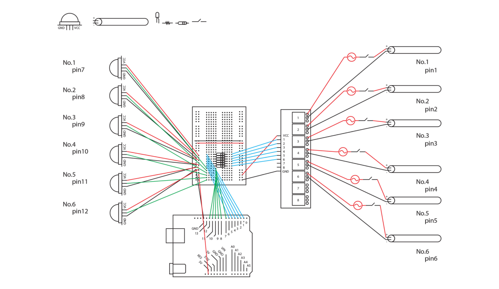

<!DOCTYPE html>
<html>
    <head>
        <meta charset="utf-8" />
        <meta name="viewport" content="width=device-width, initial-scale=1">
        <title>Galactic Walk</title>
        <link rel="stylesheet" type="text/css" href="../css/styles.css">
        <link rel="preconnect" href="https://fonts.googleapis.com">
        <link rel="preconnect" href="https://fonts.googleapis.com">
        <link rel="preconnect" href="https://fonts.gstatic.com" crossorigin>
        <link href="https://fonts.googleapis.com/css2?family=Courier+Prime:ital,wght@0,400;0,700;1,400;1,700&family=Montserrat:ital,wght@0,100..900;1,100..900&display=swap" rel="stylesheet">
        <link rel="icon" type="image/png" href="../dy_favicon.png">
    </head>
</html>
<body>
    <div class="mode-toggle">
        <button id="darkModeToggle">
            
        </button>
    </div>
    <header>
        <div class="language-selector">
            <a href="../sub_ tunnel_kr.html">KR</a>
            <div class="lang-divider"></div>
            <a href="../en/sub_ tunnel_en.html">EN</a>
            <div class="lang-divider"></div>
            <a href="#" class="active">CN</a>
        </div>
    </header>
    <div class="sub-contents">
        <a href="index_cn.html">&lt; Back to Home</a>
        
        <div class="sub-contents-text">
            <div class="sub-text-title">Overview</div>
            <div class="sub-text-p">
                Galactic Walk 是一個沉浸式設計專案，提供用戶如同直接體驗宇宙的感覺。它通過充滿星星的隧道象徵性地表達與宇宙的連接。在這個隧道內，用戶可以通過尋找感應器並激活六個LED星座來進行互動，探索空間。
                <br/><br/>
                當用戶穿過隧道時，黑光燈會點亮用螢光顏料畫出的星星，呈現出如同實際走在宇宙空間中的生動感覺。此外，用戶可以使用UV手電筒自由探索隧道，尋找隱藏的導電墨水目標。按下這些目標會激活LED星座，提供更深層的互動體驗。
                <br/><br/>
                我在這個專案中貢獻了50%的開發工作，利用Arduino連接了運動感應器和超音波感應器。通過這些技術元素，隧道內的照明和星座點亮會根據用戶的動作進行調整，創造出更具沉浸感的體驗。
                <br/><br/>
                Galactic Walk 不僅僅是簡單的空間設計，它融合了技術和藝術，成為一個創新的專案，旨在幫助用戶在情感上與宇宙連接，同時激發對宇宙的好奇心和探索欲望。
            </div>
        </div>
                
        
        
        
        
        
        
        

    <footer>
        <p>&copy; 2025 Dayeong Kim. All rights reserved.</p>
    </footer>

    <script src="../js/scripts.js"></script>
</body>